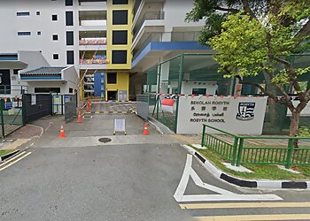

Hobbies
Projects
Home
Rosyth School

This is my school, Rosyth School! I have many great memories here and I like my teachers and classmates. 🌟
Basic Infomation
This is Rosyth School at 21 Serangoon North Avenue 4
The House Colours are: Blue (Kovan), Red (Richards), Yellow (Jenson), Green (Glasgow), and purple (Phillips)
I take Math, Chinese, English, Science, PE, Music and Art
This is
Rosyth School's website
My Co-Curricular Activities
I have been in Rosyth School for 5 years and I am in Primary 5 now
The CCA (Co-cirriculum activity) that I participate in is Brownies (Girl Guiding)
During CCA, I learn important life skills, we also go on many learning trips such as gardens by the bay, old folks home and many more!
I joined in P3 and have made many friends since then.